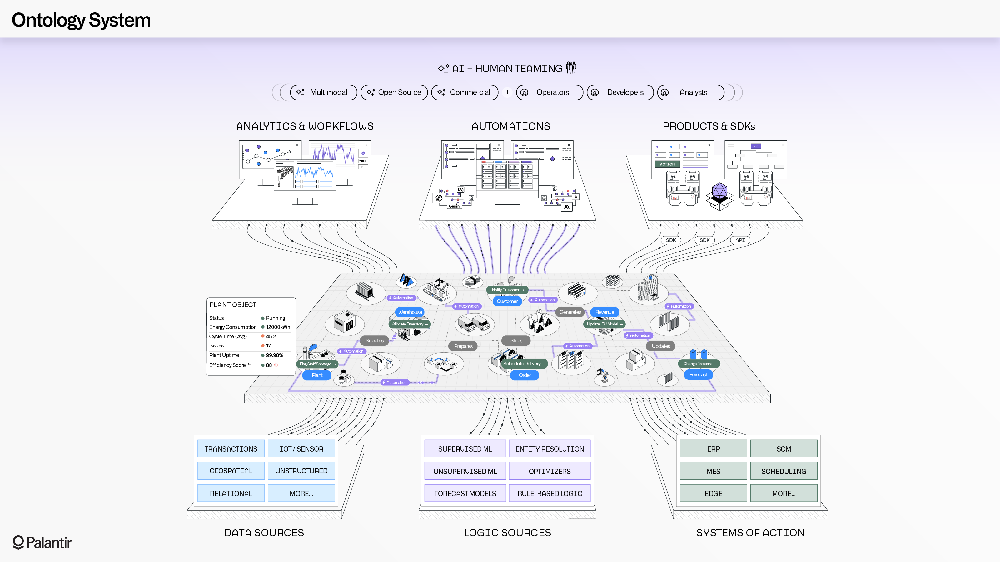
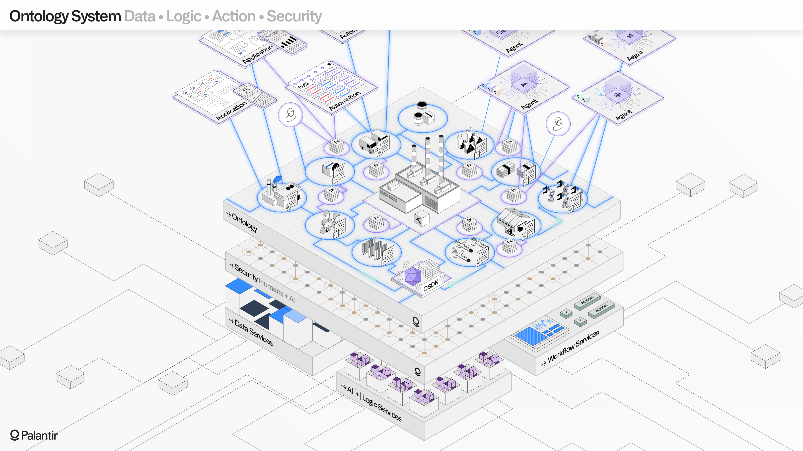
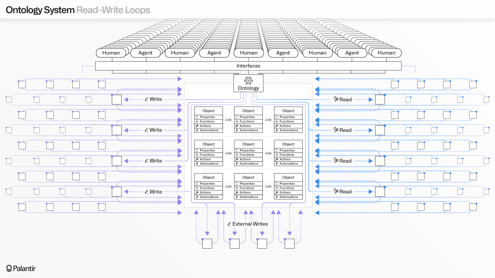
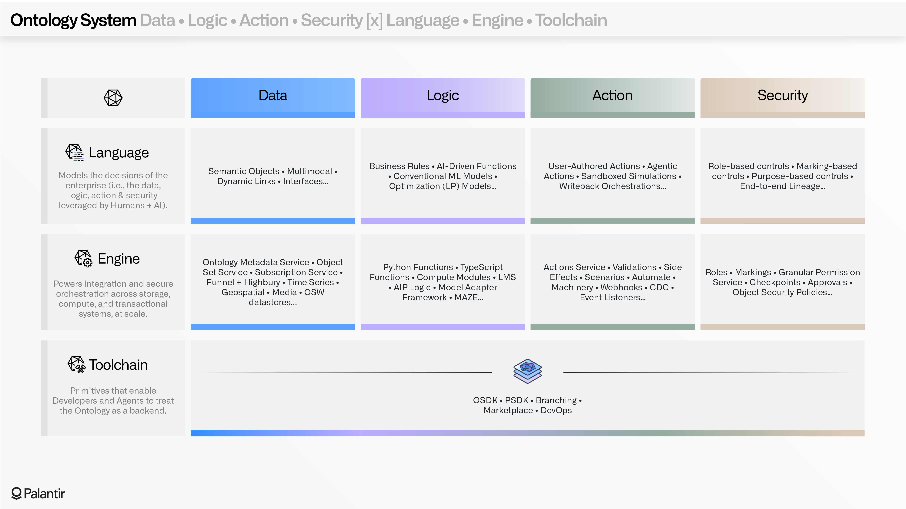

The Ontology is the system at the heart of Palantirâs architecture. The Ontology is designed to represent the complex, interconnected decisions of an enterprise, not simply the data. This enables both humans and AI agents to collaborate, across operational workflows that must orchestrate with the physical world.
An airline might model flights, aircraft, crew manifests, scheduling optimizers, and other fragmented enterprise assets into their ontology, to power day-of flight operations and longer-range planning.
A hospital system might instead model patients, nurse schedules, medical supplies, bed capacities, and other elements that often shift in real-time, and are essential to driving the patient lifecycle.
In military contexts, an ontology can unify the readiness information across forward-deployed forces with the operational processes that underpin reconnaissance and target selection, providing a shared operational world for multinational teams.

The Ontology models decisions through the four-fold integration of data, logic, action, and security.

Data can flow from every conceivable source, such as fragmented ERP estates, homegrown systems of record, CRMs, industrial databases, geospatial repositories, real-time sensors, document stores, and essentially any other digital alcove. The Ontology unifies these disparate data sources into coherent objects, properties, and links; the semantic concepts which enable the full range of stakeholders to interact with and manipulate the information.
The data objects, or "nouns", however, must be complemented by "verbs" in order to model decisions; semantics must be paired with kinetics. The Ontology is designed to model the full range of actions, from simple transactions to complex multi-step updates that must be written back to operational and edge systems in real time.
The logic that powers each action can be modular and evolve over time, reflecting the diversity of calculation and reasoning that drives decision-making. The logic underlying a given action (or enhancing a particular object) could be a simple business rule, a conventional machine learning model, an LLM-driven function, or a complex multi-step orchestration that involves several compute engines.
To illustrate the vital role of security (and how it is woven into data, logic, and actions), we can use the example of a notional medical manufacturing company that is leveraging the Ontology.
Imagine a medical manufacturer that must manage a complex web of vendor interactions, production lines, logistics activities, and customer lifecycles.
Their ontology models the manufacturing plants, work orders, customer details, inbound packages, outbound shipments, and other key semantic concepts that integrated together hundreds of underlying data sources.
For the supply chain analysts, production engineers, warehouse associates, and other team members interacting with the Ontology, different scopes of access are relevant.
As these different teams build AI-powered agents, they must have security scopes that either inherit from a human user, or from the permissions structure of a defined project. This becomes much more complex when factoring in the action and logic primitives that are connected into the Ontology, and are essential to conducting workflows.
The ability to trigger a purchase order might have granular permissions, while the ability to run a scenario to gauge the impact of a proposed reallocation might be more permissible; the underlying optimizers, or abilities to call LLMs, which manifest into functions which are interactively orchestrated via actions, might have altogether different security scopes. The Ontologyâs security system has to reconcile all of these granular policies, at the time of interaction, across tens of thousands of humans and agents.

The Ontology is not a "semantic layer"; the fourfold integration and operationalization of data, logic, action, and security cannot be accomplished with a thin semantic layer or a monolithic design.
Rather, the Ontology is a multimodal system consisting of dozens of underlying components, which can conceptually be grouped into a Language, an Engine, and Toolchain.
The Language models the semantic objects, links, and properties; along with the kinetic actions and automations; and the literal pieces of logic that define how those actions operate, and how they interact with other systems.
The Engine substantiates every component of the Language. It provides the modular read architecture that enables high-scale SQL queries, real-time subscription to state changes, and every materialization needed by mixed Human + AI teams. In equal measure, it provides a scalable write architecture which enables atomic and durable transactional updates, high-scale batch mutations, high-scale streams, and mechanisms like Change Data Capture for extremely low-latency mirroring with other operational systems.
The Toolchain encompasses the entire expressivity of the Language and the power of the Engine, enabling developers to use the Ontology as a backend. Rich, AI-enabled applications for wildfire response, naval logistics, automotive assembly, and countless other use-cases all build upon the Ontology SDK (OSDK), and a rich collection of DevOps tooling designed for the scaled governance of production use cases.

The Ontology serves as the dynamic, compounding core of the cybernetic enterprise.
Every data integration helps build a full-fidelity representation of the operational world, shared by humans and AI-enabled agents.
Every piece of logic, whether a simple business rule or a multi-step orchestration, can be connected to every action, within a decision graph that connects together traditionally fragmented processes.
Every piece of feedback gathered within a workflow can be securely incorporated into continuous learning loops, and used to power the journey from augmentation to automation.
Battle-tested security and audit systems ensure that every activity can be precisely governed, across the entire fleet of human and machine workers. The Ontology reflects the ambition of Palantirâs customers, and its constant evolution is driven by their most important missions.